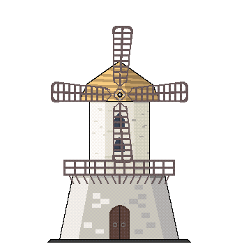

Wack-a-Mole!


Mr. Jones

Monica the Mole
VERSUS
The moles are coming!
Score:0

Mr. Jones
Monica the Mole
VERSUS
The moles are coming!
Score:0
Did you know?
Mole-catching has been practiced for thousands of years! Archeologist have found evidence that as far back as the roman empire, farmers either constructed their own mole traps or hired tradesman to assist in catching those pesty moles!
Game and art assets created by Triston Palacios